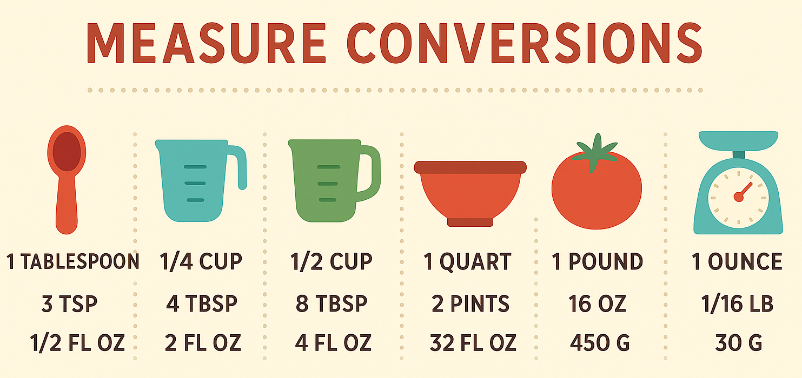

Setting up a Python Project
Last updated on 2025-06-04 | Edit this page
Overview
Questions
- How should I structure a Python project?
- How can I test my code to prevent bugs?
Objectives
- Make our repository follow a ‘standard’ Python project format
- Add a test and testing framework
- Run the tests and a linter on GitHub - using a branch and a Pull Request
1. Structuring a Project
Alfredo would like to exchange recipes with his friends in Europe. They measure everything in grams and do not understand imperial measures. So he decided to start a Python project to automate the conversion for the ingredients’ quantities.
 Measure conversions, generated using ChatGPT.
Most Python projects are structured in a similar way. There are very good reasons for this - if you follow the ‘standard’, other people who approach your code will recognise parts of it and will know by default how to install your code, run any tests that might exist, and where to look for source code or to change things like the dependencies that are required.
The following is a simple Python project with a typical structure
(the .git and some cache directories are omitted):
OUTPUT
unitconverter/
├── .codespell
│ ├── ignore_lines.txt
│ └── ignore_words.txt
├── .editorconfig
├── .github
│ └── workflows
│ ├── linters.yaml
│ └── pytest.yaml
├── .gitignore
├── .pre-commit-config.yaml
├── .pylintrc
├── .reuse
│ └── templates
│ └── compact.jinja2
├── DEVELOPMENT.md
├── LICENSE.txt
├── LICENSES
│ └── Apache-2.0.txt
├── README.md
├── REUSE.toml
├── pyproject.toml
├── requirements.txt
├── setup.py
├── src
│ └── unitconverter
│ ├── __init__.py
│ ├── functions.py
│ └── test_functions.py
└── uv.lock
# tree -a -I .git -I .ruff_cache -I .pytest_cache -I recipe_unitconverter.egg-info -I dist -I .mypy_cache -I __pycache__ unitconverter/You can see this sample project and clone it with (assuming you use CLI and HTTPS):
If using SSH, you can clone it with:
We’ll talk of these folders/files one at a time:
unitconverter/
Inside the project source tree we normally have a folder which matches the name of the Python package. This is done so that from the src directory, the code within the package can be imported with:
You can see this for e.g. in the source repository of the NumPy library.
Within this folder, we can store code files (e.g. functions.py) and further subdirectories (sub-packages). These will then be importable too.
functions.py
This is a module, just a standard Python file with classes and
functions in it. You can have as many of these as you like, but
generally people organise them around what the code is doing. So for e.g
if you have a few methods that deal with I/O, you might create a file
called io.py and put all of those methods there. Organising
your code across multiple files like this is a very good idea - it makes
it easier to find things.
__init__.py
The __init__.py file is effectively as set of
instructions that get run when you import a Python package. So with a
blank __init__.py, nothing happens if you run
import unitconverter in a Python session. If you want to
use methods from the functions.py file. What is common is to import
certain methods into the top level of the module, for e.g.:
Then, in a Python session, you would be able to do the following:
pyproject.toml
A ‘pyproject.toml’ file acts as a configuration file for packaging-related and other tools as specified in PEP 518 and PEP 621.
A ‘pyproject.toml’ file is subdivided in sections separated by square brackets labels, called tables.
The [build-system] table declares any Python level
dependencies that must be installed in order to run the project’s build
system successfully and must have at least the requires
attribute.
The [project] table specifies the project’s core
metadata, like the name, version, and authors. Note how the project
name, used in the pip installation, may be different from
the package name, used in the Python import statement. If [project] is
missing, the build backend will provide all the information, at least
name and version. This may come from other files like ‘setup.py’.
The [tool] table (and [tool.NAME]
sub-tables) is where any other tool related to your Python project can
have users specify configuration data, e.g. the black formatting tool
would store its configuration in [tool.black].
Legacy specifications of packages and requirements
It may be convenient to add legacy project specifications. They contain redundant information, already in ‘pyproject.toml’. But other peoples using your project may not be familiar with ‘pyproject.toml’ or older versions of Python may not support all its features.
setup.py
A setup.py file is just a list of instructions for Python that tell it how to install your package, and what it’s made up of. There are a myriad of options, but a very simple one for this project could be:
PYTHON
from setuptools import setup
setup(
name="recipe-unitconverter",
version="0.0.1",
packages=["src/unitconverter"],
install_requires=[
"numpy",
],
)Notice that there is a section called install_requires.
It is a list of external packages used in the project. On install with
pip, Python will make sure that ‘numpy’ is installed if not already
available. If it can’t, the installation will fail.
requirements.txt
This is just a text file where you can put any dependencies your package needs to work. If necessary, you can constrain some of your package dependencies to specific versions, for e.g.:
OUTPUT
pytest
numpy>=2.0.2To install all of the dependencies, you can run
pip install -r requirements.txt. This is well known by most
people working with Python. Generally you should try to install things
via pip like this, and not via Anaconda (unless you have no choice).
This is because Anaconda is less portable: - Introduces non-Python
libraries that mayinterfere with other tools like SSH - Is not usable by
commercial organisations without a paid for license. This matters if you
have external companies as collaborators (conda-forge and miniforge are an
open-source version of Anaconda) - Was introduced mainly for
distributing compiled dependencies. This is now well handled by pip with
the introduction of wheels - Anaconda is not usable or is
heavily discouraged on many HPC clusters.
uv.lock (and pylock.toml)
A lock file allows to reproduce the installation of a Python project, with the exact same sets of dependencies, from system to system.
For this project I’m using uv.lock, the one provided by
the uv tool. There is a
Python standard (pylock.toml
for a lock file, but it is fairly recent and not as complete. You can
install uv and generate the lock file with:
uv is a very nice tool to manage all your project needs: from initializing the project, to managing the environment, to building and releasing it. This is beyond the scope of this introduction, but you can find more on the uv project guide.
README.md
This file offers general information about the project. It is the one displayed by GitHub at the end of the main code page. It is possible to add badges with the status of the CI tests.
Other files
-
DEVELOPMENT.md: development instructions for collaborators and your future self. -
LICENSE.txt(andREUSE.toml,.reuseandLICENSES): it’s the common place for your project’s license, seen also in the licensing episode, very important when making your code public. See the Licensing compliance section below for a complete licensing solution : reuse can establish and verify licensing complaiance. -
src/unitconverter/test_functions.py: unit tests forfunctions.py, see the testing section below.
Hidden files, visible with ls -a: -
.editorconfig: joint comfiguration recognized by many
different editors - .git and .gitignore: Git
internal files, seen in the Creating a
repository and Ignoring Things episodes
respectively - .github directory: contains GitHub
automation files, see the Testing and
GitHub CI section below. - .pre-commit-config.yaml:
pre-commit configuration file, see the next section. -
.pylintrc: configuration file of pylint, a Python
linter
2. Adding Pre-commit checks
It is possible to run some checks before each commit command, taking advantage of the hooks mechanism in Git. A pre-commit will guarantee that committed code always follows the desired standard. To start using pre-commit you have to add a pre-commit config file and to install pre-commit.
Add a pre-commit config file named
.pre-commit-config.yaml with the following content for an
initial set of checks (some lines redacted for clarity, the full version
is on the repo). This configuration runs some basic file checks and more
elaborate linters (Black, Ruff, mypy, REUSE):
YAML
# For more information see
# https://pre-commit.com/index.html#install
# https://pre-commit.com/index.html#automatically-enabling-pre-commit-on-repositories
default_language_version:
# force all unspecified python hooks to run python3
python: python3
repos:
- repo: "https://github.com/pre-commit/pre-commit-hooks"
rev: v5.0.0
hooks:
- id: check-ast
- id: check-docstring-first
- id: check-toml
- id: check-merge-conflict
- id: check-yaml
- id: end-of-file-fixer
- id: fix-byte-order-marker
- id: mixed-line-ending
- id: trailing-whitespace
args:
- "--markdown-linebreak-ext=md"
- repo: "https://github.com/pre-commit/pygrep-hooks"
rev: v1.10.0
hooks:
- id: python-check-blanket-noqa
- id: python-check-blanket-type-ignore
- id: python-use-type-annotations
- repo: "https://github.com/pycqa/isort"
rev: 6.0.1
hooks:
- id: isort
- repo: "https://github.com/psf/black"
rev: 25.1.0
hooks:
- id: black
- repo: "https://github.com/pre-commit/mirrors-prettier"
rev: v3.1.0
hooks:
- id: prettier
# HTML pre section bug https://github.com/prettier/prettier/issues/17042
exclude: "doc/factory/troubleshooting.html"
exclude_types:
- "python"
additional_dependencies:
- "prettier"
- "prettier-plugin-toml@0.3.1"
- repo: https://github.com/astral-sh/ruff-pre-commit
# Ruff version.
rev: v0.11.11
hooks:
# Run the linter.
- id: ruff
# No auto-fix
# args: [ --fix ]
# Don't Run the formatter.
# - id: ruff-format
- repo: "https://github.com/asottile/pyupgrade"
rev: v3.20.0
# rev: e695ecd365119ab4e5463f6e49bea5f4b7ca786b
# lock to v2.31.0 (must specify the git hash), v2.32.0 requires python >= 3.7
hooks:
- id: pyupgrade
exclude: "^skip/this/file.py$"
# needs to be py3.6 compatible
args:
- "--py36-plus"
- repo: https://github.com/pre-commit/mirrors-mypy
rev: v1.16.0
hooks:
- id: mypy
- repo: https://github.com/codespell-project/codespell
rev: v2.2.4
hooks:
- id: codespell
args: [
# Pass skip configuration as command line arguments rather than in the
# config file because neither cfg nor TOML support splitting this argument
# across multiple lines.
# Globs must match the Python `glob` module's format:
# https://docs.python.org/3/library/glob.html#module-glob
"-S",
".codespell/ignore_words.txt",
# Write changes in place
"-w",
]
additional_dependencies:
- tomli
- repo: https://github.com/fsfe/reuse-tool
rev: v5.0.2
hooks:
- id: reuse
additional_dependencies:
- python-debian==0.1.40To install it run from the repository root:
You may want to setup automatic notifications for pre-commit enabled
repos. This will suggest updates to your
.pre-commit-config.yaml: https://pre-commit.com/index.html#automatically-enabling-pre-commit-on-repositories
You can also run pre-commit manually to check all the files:
3. Licensing compliance
The Recipe Units Converter is released under the Apache 2.0 license
and license compliance is handled with the REUSE tool. REUSE is installed as
development dependency or you can install it manually
(pip install reuse). All files should have a license
notice:
to check compliance you can use
reuse lint. This is the command run also by the pre-commit and CI checks-
you can add on top of new files SPDX license notices like
# SPDX-FileCopyrightText: 2025 Alfredo Linguini # SPDX-License-Identifier: Apache-2.0 -
or let REUSE do that for you (
FILEPATHis your new file): Files that are not supported and have no comments to add the SPDX notice can be added to the
REUSE.tomlfile. REUSE does not support pyproject.toml yet.New licenses can be added to the project using
reuse download LCENSEID. If you are contributing to a project, please contact project management if this is needed.
4. GitHub CI: unit tests and linting
First, we’ll introduce a new file. In the
src/unitconverter subdirectory, in a file called
test_functions.py we can write any tests of methods in
functions.py. The library pytest is commonly
used for unit tests like this. Pytest looks for files named
*_test.py or test_*.py and can pick up tests
written in the following way:
PYTHON
from .functions import convert_imperial
def test_convert_imperial():
assert convert_imperial("34 liters") == "34.0 liters"
assert convert_imperial("1 lb") == "453.592 grams"
assert convert_imperial("2 ounces") == "56.699 grams"Note that both the file name and the method inside have the same name
of the module and function they want to test, but are preceded with
test_ - this is compulsory!
With this, when pytest is installed, you can run ‘py.test -v’ at the command line, and all of your tests will run. With unit tests like this, you can check each component of your code for correctness every time you make changes.
Next, create a file called .github/workflows/pytest.yaml
with the following content:
YAML
---
name: PyTest
on:
push:
branches:
- "**" # matches every branch
pull_request:
branches:
- main
jobs:
run_linters:
name: Run unit test against code tree
runs-on: ubuntu-latest
steps:
- name: checkout code tree
uses: actions/checkout@v4
- name: Set up Python 3.9
uses: actions/setup-python@v5
with:
python-version: "3.9"
architecture: "x64"
- name: Install dependencies
run: |
python3 -m pip install --upgrade pip
if [ -f requirements.txt ]; then python3 -m pip install -r requirements.txt; fi
- name: Unit test
env:
PYTHONPATH: ${{ github.workspace }}/src
run: |
python3 -m pytest --import-mode=append srcThis is a basic recipe that will allow your tests to run on GitHub. Add both of these files to your staging area and commit them, and then push to GitHub.
The unitconverter example includes a second CI
configuration file, to run common Python linters.
Key Points
- While there is often variation, most Python projects follow a similar structure for their code
- Doing so is beneficial because it allows components of your code to be reused more easily by yourself and others
- Testing can be ‘automatic’ rather than manual. This catches many issues before they become a problem - this is continuous integration (CI)
- The concepts here can be used for all programming languages - not just Python - and are pretty much universally used by professional software developers